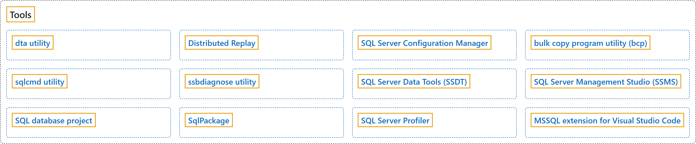

10. Tools
Classification

Glossary
| Term | Definition | 中文翻译 | Source |
|---|---|---|---|
| dta utility dta 实用工具 |
"The dta utility is the command prompt version of Database Engine Tuning Advisor. The dta utility is designed to allow you to use Database Engine Tuning Advisor functionality in applications and scripts." | dta 实用工具是数据库引擎优化顾问的命令提示符版本。dta 实用工具旨在让你能够在应用程序和脚本中使用数据库引擎优化顾问的功能。 | Microsoft, 2025d, para 1 |
| Distributed Replay 分布式重播 |
"The Microsoft SQL Server Distributed Replay feature helps you assess the effect of future SQL Server upgrades. You can also use it to help assess the effect of hardware and operating system upgrades, and SQL Server tuning." | Microsoft SQL Server 分布式重播功能可帮助你评估未来 SQL Server 升级的影响。你还可以用它来帮助评估硬件和操作系统升级以及 SQL Server 优化的影响。 | Microsoft, 2025b, para 2 (the Important note is para 1) |
| SQL Server Configuration Manager SQL Server 配置管理器 |
"SQL Server Configuration Manager is a tool to manage the services associated with SQL Server, configure the network protocols used by SQL Server, and manage the network connectivity configuration from SQL Server client computers." | SQL Server 配置管理器是一种工具，用于管理与 SQL Server 关联的服务、配置 SQL Server 使用的网络协议，以及管理来自 SQL Server 客户端计算机的网络连接配置。 | Microsoft, 2026b, para 1 |
| bulk copy program utility (bcp) bcp 大容量复制程序实用工具 |
"The bulk copy program utility (bcp) bulk copies data between an instance of the SQL Server Database Engine and a data file in a user-specified format." |
大容量复制程序实用工具（bcp）在 SQL Server 数据库引擎实例与用户指定格式的数据文件之间大容量复制数据。 | Microsoft, 2026f, para 1 |
| sqlcmd utility sqlcmd 实用工具 |
(context) "Use the sqlcmd utility to enter Transact-SQL statements, system procedures, and script files through various modes:" | （语境）使用 sqlcmd 实用工具，通过多种模式输入 Transact-SQL 语句、系统过程和脚本文件： | Microsoft, 2026g, para 1 (the modes are a list) |
| ssbdiagnose utility ssbdiagnose 实用工具 |
"The ssbdiagnose utility reports issues in Service Broker conversations or the configuration of Service Broker services." | ssbdiagnose 实用工具会报告 Service Broker 对话中的问题或 Service Broker 服务配置中的问题。 | Microsoft, 2025e, para 1 |
| SQL Server Data Tools (SSDT) SQL Server Data Tools (SSDT) |
"SQL Server Data Tools (SSDT) is a set of development tools in Visual Studio with focus on building SQL Server databases and Azure SQL databases." | SQL Server Data Tools (SSDT) 是 Visual Studio 中的一组开发工具，重点用于构建 SQL Server 数据库和 Azure SQL 数据库。 | Microsoft, 2025a, para 1 |
| SQL Server Management Studio (SSMS) SQL Server Management Studio (SSMS) |
"SQL Server Management Studio (SSMS) is an integrated environment for managing any SQL infrastructure." | SQL Server Management Studio (SSMS) 是用于管理任何 SQL 基础结构的集成环境。 | Microsoft, 2026e, para 1 |
| SQL database project SQL 数据库项目 |
"A SQL database project is a local representation of SQL objects that comprise the schema for a single database, such as tables, stored procedures, or functions." | SQL 数据库项目是构成单个数据库架构的 SQL 对象的本地表示形式，例如表、存储过程或函数。 | Microsoft, 2026d, para 1 |
| SqlPackage SqlPackage |
"SqlPackage is a command-line utility that automates the database development tasks by exposing some of the public Data-Tier Application Framework (DacFx) APIs." | SqlPackage 是一种命令行实用工具，通过公开部分公共数据层应用程序框架 (DacFx) API 来自动执行数据库开发任务。 | Microsoft, 2025c, para 1 |
| SQL Server Profiler SQL Server Profiler |
"SQL Server Profiler is an interface to create and manage traces and analyze and replay trace results." | SQL Server Profiler 是用于创建和管理跟踪以及分析和重播跟踪结果的界面。 | Microsoft, 2026c, para 1 |
| MSSQL extension for Visual Studio Code 适用于 Visual Studio Code 的 MSSQL 扩展 |
"The MSSQL extension for Visual Studio Code supports developers building applications that use Azure SQL (including Azure SQL Database, Azure SQL Managed Instance, and SQL Server on Azure Virtual Machines), SQL database in Microsoft Fabric, and SQL Server." | 适用于 Visual Studio Code 的 MSSQL 扩展为构建应用程序的开发人员提供支持，这些应用程序使用 Azure SQL（包括 Azure SQL 数据库、Azure SQL 托管实例和 Azure 虚拟机上的 SQL Server）、Microsoft Fabric 中的 SQL 数据库以及 SQL Server。 | Microsoft, 2026a, para 1 |
References
- Microsoft. (2025a, December 3). SQL Server Data Tools. Microsoft Learn. https://learn.microsoft.com/en-us/sql/ssdt/sql-server-data-tools
- Microsoft. (2025b, September 7). SQL Server Distributed Replay overview. Microsoft Learn. https://learn.microsoft.com/en-us/sql/tools/distributed-replay/sql-server-distributed-replay
- Microsoft. (2025c, March 2). SqlPackage. Microsoft Learn. https://learn.microsoft.com/en-us/sql/tools/sqlpackage/sqlpackage
- Microsoft. (2025d, December 15). dta utility. Microsoft Learn. https://learn.microsoft.com/en-us/sql/tools/dta/dta-utility
- Microsoft. (2025e, December 16). ssbdiagnose utility (Service Broker). Microsoft Learn. https://learn.microsoft.com/en-us/sql/tools/ssbdiagnose/ssbdiagnose-utility-service-broker
- Microsoft. (2026a, August 17). MSSQL extension for Visual Studio Code. Microsoft Learn. https://learn.microsoft.com/en-us/sql/tools/visual-studio-code-extensions/mssql/mssql-extension-visual-studio-code
- Microsoft. (2026b, March 16). SQL Server Configuration Manager. Microsoft Learn. https://learn.microsoft.com/en-us/sql/tools/configuration-manager/sql-server-configuration-manager
- Microsoft. (2026c, February 21). SQL Server Profiler. Microsoft Learn. https://learn.microsoft.com/en-us/sql/tools/sql-server-profiler/sql-server-profiler
- Microsoft. (2026d, February 6). What are SQL database projects? Microsoft Learn. https://learn.microsoft.com/en-us/sql/tools/sql-database-projects/sql-database-projects
- Microsoft. (2026e, March 9). What is SQL Server Management Studio (SSMS)? Microsoft Learn. https://learn.microsoft.com/en-us/sql/ssms
- Microsoft. (2026f, September 7). bcp utility. Microsoft Learn. https://learn.microsoft.com/en-us/sql/tools/bcp/bcp-utility
- Microsoft. (2026g, October 10). sqlcmd utility. Microsoft Learn. https://learn.microsoft.com/en-us/sql/tools/sqlcmd/sqlcmd-utility